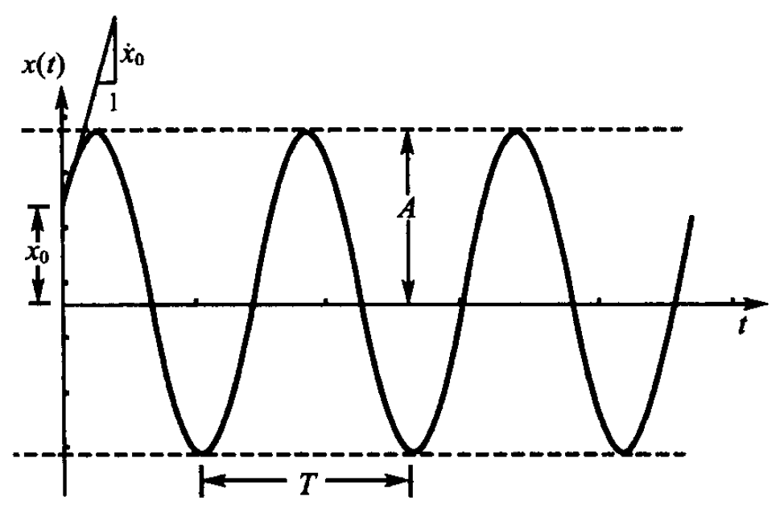
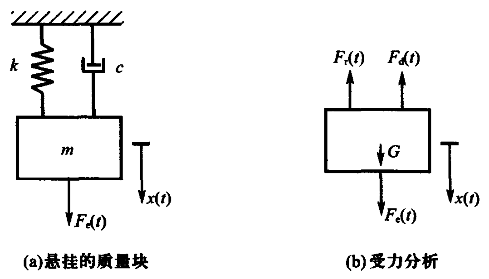
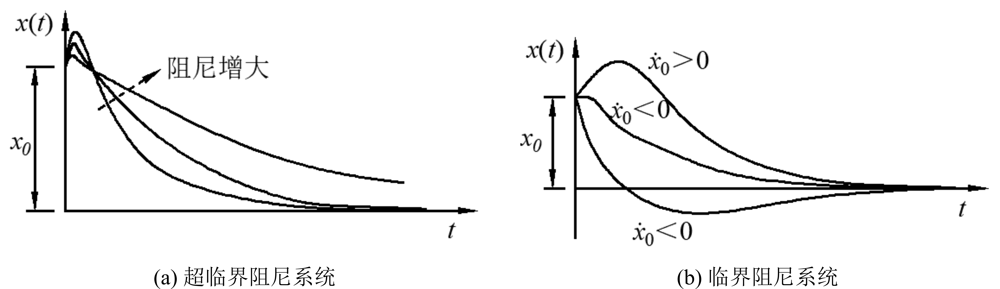
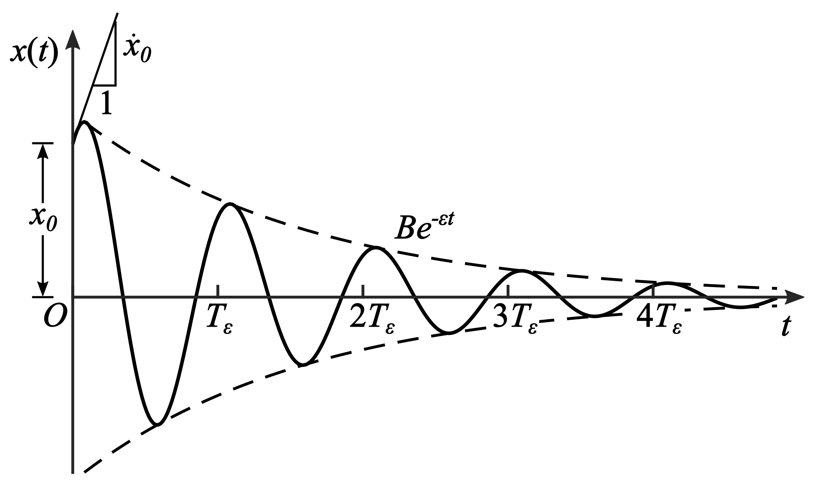
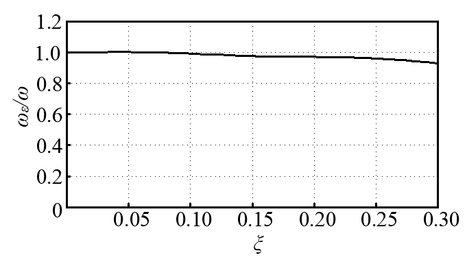

1.2. 自由振动#
若系统不受外部的干扰(阻尼除外)作用，仅由初始条件（初位移和初速度）引起的振动，称为自由振动（FreeVibration）。反之，系统因持续地受到外部干扰作用而发生的振动,称为强迫振动（Forced Vibration）。 由于系统在自由振动中不受外力作用，由方程(1.5)可知响应的特解为0。因此齐次方程通解\(x_h(t)\)就是自由振动响应，式(1.4)就是自由振动方程，即
自由振动方程(1.8)考虑了阻尼的影响，称为有阻尼自由振动（Damped Free Vibration）。如不考虑阻尼影响，则称为无阻尼自由振动（Undamped Free Vibration）。
1.2.1. 无阻尼自由振动#
当不考虑阻尼作用时，自由振动方程(1.8)退化为
若令
则方程(1.9)可以改写为
常微分方程(1.11)的通解很容易得到，可表示为：
则
式中,\(A1\)、\(A2\)（或\(A\)、\(\phi\)）是待定常数,取决于初始条件。如将初始条件,即式(1.7),分别代入式(1.12)和式(1.13),就可以得到
则
从式(1.12)或式(1.15)可以看出，当不考虑阻尼作用时，\(x\) 的值总是随着时间的增加周而复始地改变。这种振动称为简谐（或谐和）振动（Harmonic Vibration）。\(A\) 称为振动的振幅（Amplitude），\(\omega t+\phi\) 称为相角（Phase Angle），\(\phi\) 称为初相角（\(t=0\) 时的相角）。容易证明
只要知道了 \(A_1\)、\(A_2\)，就容易求出 \(A\) 与 \(\phi\)，反之亦然。式(1.15)表示的无阻尼自由振动如Fig. 1.4所示。
{kind=link}

Fig. 1.4 无阻尼自由振动#
简谐振动属于周期性振动。从式(1.12)不难看出，\(\omega\) 是周期振动的角频率（Angular Frequency）或圆频率（Circular Frequency），称为单自由度系统的无阻尼自振（或固有）频率（Undamped Natural Frequency of Vibration）。单位为弧度/秒（rad/s）或 1/秒（1/s）。由式(1.10)知
工程上常用每秒内系统振动的次数来表示自振频率，也称自振（或固有）频率（Natural Frequency），即
其单位为周/秒（或赫兹、Hz）。区别于 \(f\)，\(\omega\) 通常称为自振（或固有）圆（或角）频率（Natural Circular/Angular Frequency）。系统振动一次所需时间
称为自振（或固有）周期（Natural Period of Vibration），单位为秒（s）。
从上面的讨论可知，振幅 \(A\) 与初相角 \(\phi\) 是由初始条件确定的；但自振频率 \(f\)（或 \(\omega\)）和自振周期 \(T\) 则与初始条件无关，而仅取决于系统本身的刚度和质量。
由式(1.17)可知：当振动系统的质量 \(m\) 增加时，将引起自振频率的下降，而当刚度 \(k\) 增加时，将引起自振频率的增加。一切弹性振动系统都是这样。因此，在处理实际工程问题时，如果想提高某结构的自振频率，可以从两方面设法：或者提高结构的刚度（如增加约束，采用刚度大的构件等）；或者减小结构的重量（如改用轻质材料等）。
{kind=link}

Fig. 1.5 悬挂质量系统#
考虑如Fig. 1.5(a) 所示悬挂质量系统（不考虑弹簧的质量），它可看做是如Fig. 1.1(a) 所示系统旋转了 90°。假定质量块在重力 \(G\) 作用下的静伸长为 \(x_{\text{st}}\)。如果质量块偏离静平衡位置的位移为 \(x\)，此时作用在质量块上的力如Fig. 1.5(b) 所示。仿照方程(1.3)的推导，系统的动力平衡方程可以写做
其中：
为质量块的绝对位移。注意到
将式(1.22)和式(1.21)代入方程(1.20), 同时注意到 \(x_{\text{st}}\) 是不随时间变化的, 则方程(1.20)可化为
这说明相对于振动系统静平衡位置写出的运动方程不受重力影响。因此, 在本书以后的讨论中, 动力响应一般以静平衡位置作为基准。求总的位移、内力响应时, 只要把动力分析的结果与相应的静力结果相加即可。
对于如Fig. 1.5(a)所示的悬挂质量系统, 可以推得其自振频率的另一种表达方式。由式(1.17)可知
虽然我们并不知道重物的质量 \(m\) 是多少, 也不知道弹簧的刚度 \(k\) 是多少, 但很容易根据式(1.24)由其静伸长求出系统的自振频率。
1.2.2. 交互探索：质量和刚度如何影响振动？#
Tip
在无阻尼系统中，系统的运动完全由其自身的物理属性决定：
质量 (\(m\)) 增加：系统惯性变大，运动状态更难改变，导致振荡变慢，固有频率降低。
刚度 (\(k\)) 增加：系统更“硬”，恢复力变大，导致振荡变快，固有频率增加。
请尝试点击或拖动下方的滑动条，观察质量和刚度是如何改变系统固有频 \(\omega\)和自振周期 \(T\)的。
1.2.3. 有阻尼自由振动#
前面已经提过, 系统在振动过程中, 总要受到各种阻尼的作用, 所以自由振动将逐渐衰减。1.2.1节中所述的简谐振动只是一种理想化情况。
单自由度系统考虑阻尼作用的自由振动方程为式(1.8), 即
或写为
其中
可称为阻尼特性系数(Damping Coefficient), 单位为 \(1/\)秒(\(1/\text{s}\))；\(\omega^{2}\)仍由式(1.10)定义。
常微分方程(1.26)的特征方程为
特征方程的根为
下面针对阻尼取值的几种情况来讨论方程(1.26)的解。
1.2.3.1. 超临界阻尼系统(Over Critically Damped System)#
阻尼很大, 即 \(\varepsilon>\omega\), 此时特征方程(1.28)有两个不等的实根, 则微分方程的通解为
对于初始条件 \(x(0)=x_{0},\dot{x}(0)=\dot{x}_{0}\), 不难得到
1.2.3.2. 临界阻尼系统(Critically Damped System)#
阻尼很大, 但 \(\varepsilon=\omega\)。由式(1.29)知 \(s_{1}=s_{2}=-\varepsilon\), 特征方程有两个相等的实根, 则微分方程的通解为
由初始条件 \(x(0)=x_{0},\dot{x}(0)=\dot{x}_{0}\), 不难得到
式(1.31)和式(1.33)所表示的运动都没有振动的特征。不难验证, 当 \(t\) 增大时, \(x\) 值单调地趋于零, 如Fig. 1.6所示。
{kind=link}

Fig. 1.6 临界阻尼和过阻尼系统的自由振动#
1.2.3.3. 低临界阻尼系统(Under Critically Damped System)#
阻尼不大, \(\varepsilon<\omega\), 这时特征方程的根为
其中
此时微分方程的通解为
由初始条件 \(x(0)=x_{0},\dot{x}(0)=\dot{x}_{0}\), 不难求得
故式(1.36)可写为
还可将式(1.38)写为
其中
式(1.38)表示的运动如Fig. 1.7所示。由Fig. 1.7可见, 由于阻尼的影响, 振动逐渐衰减至静止。由此可以看出, 有阻尼的自由振动不是谐和振动或周期振动。
{kind=link}

Fig. 1.7 有阻尼自由振动#
习惯上称 \(\omega_{\varepsilon}\) 为有阻尼自振频率(Damped Natural Frequency of Vibration), 称
为有阻尼自振周期(Damped Natural Period of Vibration)。
如果系统的阻尼特性系数 \(\varepsilon=\omega\), 称这时的阻尼为临界阻尼(Critical Damping)。令
称为系统的阻尼比(Damping Ratio), 是系统实际阻尼与其临界阻尼之比。显然 \(\zeta=1\)时的阻尼就是临界阻尼。容易证明
将式(1.42)代入方程(1.26), 可得到考虑阻尼作用的自由振动方程的另一种形式, 即
对于通常的工程结构, \(\zeta\)的值一般在\(1\%\sim10\%\)之间。因此, 式(1.43)等号右端根号内的值非常接近 \(1\), 故常近似地认为 \(\omega_{\varepsilon}=\omega\)。Fig. 1.8给出了 \(\omega_{\varepsilon}\) 与 \(\omega\) 的比值随 \(\zeta\) 的变化曲线, 可以看到：在 \(0\leqslant\zeta\leqslant0.1\) 区间, \(\frac{\omega_{\varepsilon}}{\omega}\) 非常接近 \(1\)。因此, 在计算结构的自振频率时, 可不考虑阻尼的影响。这样计算的 \(\omega\) 与实际的 \(\omega_{\varepsilon}\) 是很接近的, 但却大大简化了计算。例如, 在例 2-4 中将会看到, 系统的振幅每周期衰减 \(50\%\) (实际结构物一般没有这么大的阻尼)。即使在这样的情况下, 容易验证 \(\omega\) 与 \(\omega_{\varepsilon}\) 的差别亦仅在 \(0.6\%\) 左右。当然, 在工程中也有一些阻尼相对比较大的结构或机械系统。例如，为了减小结构或机械系统的振动而人为地在系统中加入一些阻尼器或耗能元件。又如, 为了使仪器有较大的量程, 大多加速度计将其弹簧振子的阻尼比 \(\zeta\) 取为 \(0.7\)。
{kind=link}

Fig. 1.8 有阻尼自振频率与无阻尼自振频率的比值#
如以 \(B_n\) 表示在某一时刻 \(t_n\) 时的振幅,\(B_{n+1}\) 表示经过一个周期后(即时刻 \(t=t_n+T_{\varepsilon}\))的振幅。由式(1.39)知, 当振动达到振幅时, 必有 \(\sin(\omega_{\varepsilon}t+\phi)=1\), 故有
所以
若令
则
\(\lambda\) 称为对数递减量或对数递减率(Logarithmic Decrement), 则
因此, 对于有黏滞阻尼情况下的自由振动, 其振幅是逐渐衰减的; 且任意“相邻”二振幅之间的比值是一常数。利用这个性质, 可以由实验得出阻尼系数 \(\varepsilon\) 或 \(c\) 的值。
Note
例1-4 设单自由度振动系统的质量 \(m=1\ \mathrm{kg}\), 刚度 \(k=4900\ \mathrm{N/m}\)。假定由实验测得系统振动时的位移曲线如Fig. 1.7所示。量得某相邻两次振幅为 \(B_n=2.5\ \mathrm{cm}\), \(B_{n+1}=1.25\ \mathrm{cm}\)。求 \(\varepsilon\) 与 \(c\) 的值。
解 由式(1.46)知对数衰减量
再由式(1.50), 建立关于 \(\zeta\) 的方程
由此可解得
系统自振频率为
则
由于式(1.50)右端根号内值非常接近 \(1\), 因此, 式(1.50)可近似为
用式(1.51)计算 \(\zeta\) 值比用式(1.50)要容易得多, 而两种方法所得到的结果却非常接近。例如, 用式(1.51)计算得到例2-4中的 \(\zeta\) 值为 \(0.1103\), 和用式(1.50)的计算结果仅相差 \(0.5\%\)。
当用自由振动衰减曲线求阻尼系数时, 为了提高计算精度, 总是量出相距 \(l\) 个周期的振幅 \(B_n\) 与 \(B_{n+l}\), 算出
然后按下式计算阻尼比
上述测定阻尼系数的方法称为自振衰减法(Free Vibration Decay Method)。
由本节的讨论可知, 在不考虑阻尼作用时, 系统自由振动的振幅不随时间而衰减。亦即在振动过程中, 不发生能量的损耗(或说能量不向外界散逸), 这样的系统, 通常称为保守系统(Conservative System)。反之, 在考虑阻尼作用时, 系统的振幅随时间逐渐衰减, 甚至根本振动不起来, 质量单调地趋于平衡位置。亦即系统在振动过程中, 发生了能量的损耗(或能量向外界散逸), 这样的系统则是非保守系统(Non-Conservative System)。
1.2.4. 交互探索：阻尼如何影响振动？#
Tip
阻尼比 \(\zeta\) 的大小直接决定了系统的运动形态：
\(\zeta = 0\)：无阻尼状态。系统发生持续等幅的周期性振荡。
\(0 < \zeta < 1\)：欠阻尼状态。系统发生振幅按指数衰减的周期性振荡。
\(\zeta = 1\)：临界阻尼状态。系统不发生振荡，以最快速度回到平衡位置。
\(\zeta > 1\)：过阻尼状态。系统不发生振荡，极其缓慢地回到平衡位置。
下面是一个基于单自由度系统精确解析解构建的仿真模型（设初始位移 \(x_0=1\)，初始速度 \(\dot{x}=0\)，固有频率 \(\omega=10\)）。
请尝试点击或拖动下方的滑动条，观察阻尼比 \(\zeta\) 从 0 增加到 1.5 时，振动曲线是如何从“等幅振荡”过渡到“迅速衰减”，最终变为“缓慢爬行”的过阻尼状态的。